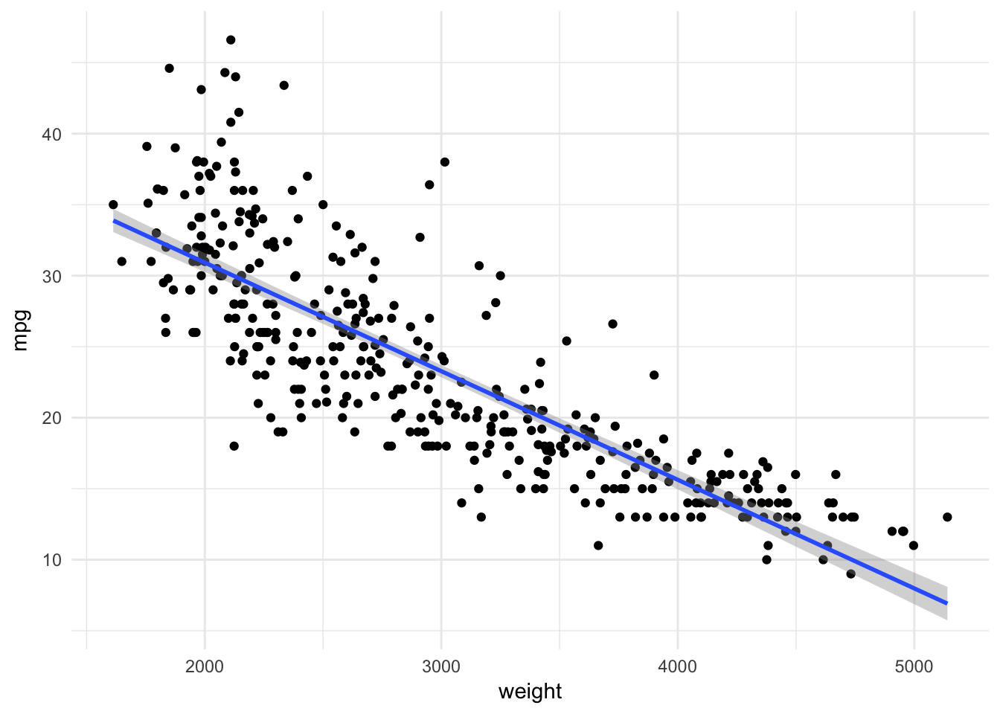
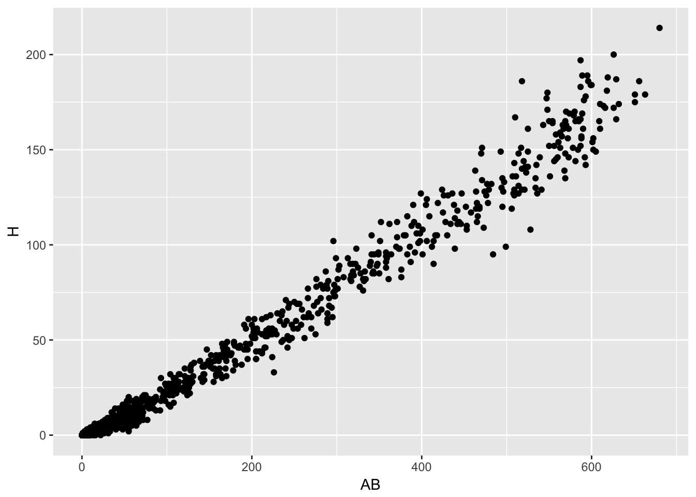
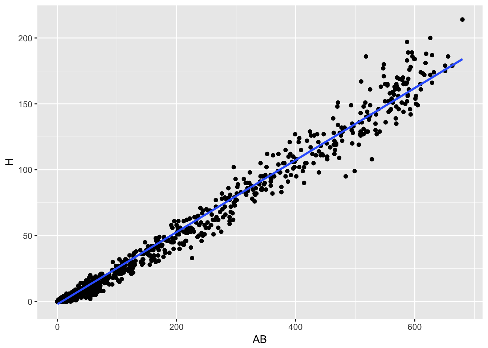
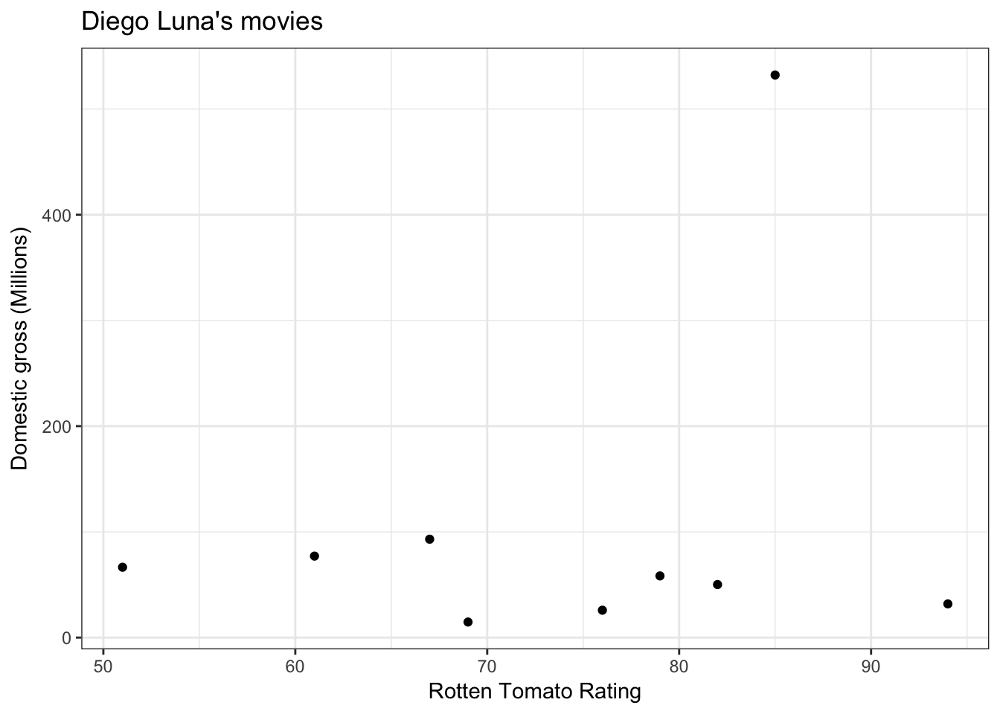

8 Visualizing data
We are now entering an important step of what we would want to do with a dataset before starting modeling using statistics or Machine Learning. We have seen manipulations and operations that prepare datasets into tidy (or normal form), compute summaries, and join tables to obtain organized, clean data tables that contain the observational units, or entities, we want to model statistically.
At this point, we want to perform Exploratory Data Analysis to better understand the data at hand, and help us make decisions about appropriate statistical or Machine Learning methods, or data transformations that may be helpful to do. Moreover, there are many instances where statistical data modeling is not required to tell a clear and convincing story with data. Many times an effective visualization can lead to convincing conclusions.
8.0.1 EDA (Exploratory Data Analysis)
The goal of EDA is to perform an initial exploration of attributes/variables across entities/observations. In this section, we will concentrate on exploration of single or pairs of variables. Later on in the course we will see dimensionality reduction methods that are useful in exploration of more than two variables at a time.
Ultimately, the purpose of EDA is to spot problems in data (as part of data wrangling) and understand variable properties like:
- central trends (mean)
- spread (variance)
- skew
- suggest possible modeling strategies (e.g., probability distributions)
We also want to use EDA to understand relationships between pairs of variables, e.g. their correlation or covariance.
8.1 Visualization of single variables
Let’s begin by using R’s basic graphics capabilities which are great for creating quick plots especially for EDA. We will then see ggplot2 that requires you to be a bit more thoughtful on data exploration that can lead to good ideas about analysis and modeling.
Let’s start with a very simple visualization of the dep_delay variable in the flights dataset.
library(dplyr)
library(nycflights13)
plot(flights$dep_delay)That’s not particularly informative since there is no structure to this plot. Let’s change the order of the points to depend on departure delay and change the graphical representation to make easier to see.
plot(sort(flights$dep_delay), type="h", ylab="Departure Delay")What can we make of that plot now? Start thinking of central tendency, spread and skew as you look at that plot.
Let’s now create a graphical summary of that variable to incorporate observations made from this initial plot. Let’s start with a histogram: it divides the range of the dep_delay variable into equal-sized bins, then plots the number of observations within each bin. What additional information does this new visualization gives us about this variable?
hist(flights$dep_delay, xlab="Departure Delay")The nclass parameter controls the number of bins into which the dep_delay range is divided. Try changing that parameter and see what happens.
Now, we can (conceptually) make the bins as small as possible and get a smooth curve that describes the distribution of values of the dep_delay variable. We call this a density plot:
plot(density(flights$dep_delay, na.rm=TRUE), xlab="Departure Delay")Now, one more very useful way of succintly graphically summarizing the distribution of a variable is using a boxplot.
boxplot(flights$dep_delay, ylab="Departure Delay")That’s not very clear to see, so let’s do a transformation of this data to see this better:
boxplot(log(flights$dep_delay -
min(flights$dep_delay,na.rm=TRUE)
+1), ylab="Departure Delay")So what does this represent: (a) central tendency (using the median) is represented by the black line within the box, (b) spread (using inter-quartile range) is represented by the box and whiskers. (c) outliers (data that is unusually outside the spread of the data)
We will see more formal descriptions of these summary statistics in the next section, but you can see what we are trying to capture with them graphically.
8.1.1 Visualization of pairs of variables
Now we can start looking at the relationship between pairs of variables. Suppose we want to see the relationship between dep_delay, a numeric variable, and origin, a categorical variable. The neat thing here is that we can start thinking about conditioning as we saw before. Here is how we can see a plot of the distribution of departure delays conditioned on origin airport.
boxplot(log(flights$dep_delay - min(flights$dep_delay, na.rm=TRUE) + 1) ~ flights$origin,
ylab="Departure Delay", xlab="Airport of origin")For pairs of continuous variables, the most useful visualization is the scatter plot. This gives an idea of how one variable varies conditioned on another variable.
plot(flights$dep_delay, flights$arr_delay, xlab="Departure Delay", ylab="Arrival Delay")8.2 EDA with the grammar of graphics
While we have seen a basic repertoire of graphics it’s easier to proceed if we have a bit more formal way of thinking about graphics and plots. Here is where we will use the grammar of graphics implemented in R by the package ggplot2.
The central premise is to characterize the building pieces behind plots:
- The data that goes into a plot, works best when data is tidy
- The mapping between data and aesthetic attributes
- The geometric representation of these attributes
Let’s start with a simple example:
library(dplyr)
library(ggplot2)
library(Lahman)
batting <- tbl_df(Batting)
# scatter plot of at bats vs. runs for 2010
batting %>%
filter(yearID == "2010") %>%
ggplot(aes(x=AB, y=R)) +
geom_point()
Data: Batting table filtering for year
Aesthetic attributes: - x-axis mapped to variables AB - y-axis mapped to variable R
Geometric Representation: points!
Now, you can cleanly distinguish the constituent parts of the plot. E.g., change the geometric representation
# scatter plot of at bats vs. runs for 2010
batting %>%
filter(yearID == "2010") %>%
ggplot(aes(x=AB, y=R, label=teamID)) +
geom_text() +
geom_point()E.g., change the data.
# scatter plot of at bats vs. runs for 1995
batting %>%
filter(yearID == "1995") %>%
ggplot(aes(x=AB, y=R)) +
geom_point()## Warning: Removed 279 rows containing missing values (geom_point).E.g., change the aesthetic.
# scatter plot of at bats vs. hits for 2010
batting %>%
filter(yearID == "2010") %>%
ggplot(aes(x=AB, y=H)) +
geom_point()
Let’s make a line plot
What do we change? (data, aesthetic or geometry?)
batting %>%
filter(yearID == "2010") %>%
sample_n(100) %>%
ggplot(aes(x=AB, y=H)) +
geom_line()Let’s add a regression line
What do we add? (data, aesthetic or geometry?)
batting %>%
filter(yearID == "2010") %>%
ggplot(aes(x=AB, y=H)) +
geom_point() +
geom_smooth(method=lm)
8.2.1 Other aesthetics
Using other aesthetics we can incorporate information from other variables.
Color: color by categorical variable
batting %>%
filter(yearID == "2010") %>%
ggplot(aes(x=AB, y=H, color=lgID)) +
geom_point() +
geom_smooth(method=lm)Size: size by (discrete) numeric variable
batting %>%
filter(yearID == "2010") %>%
ggplot(aes(x=AB, y=R, size=HR)) +
geom_point() +
geom_smooth(method=lm)
8.2.2 Faceting
The last major component of exploratory analysis called faceting in visualization, corresponds to conditioning in statistical modeling, we’ve seen it as the motivation of grouping when wrangling data.
batting %>%
filter(yearID %in% c("1995", "2000", "2010")) %>%
ggplot(aes(x=AB, y=R, size=HR)) +
facet_grid(lgID~yearID) +
geom_point() +
geom_smooth(method=lm)## Warning: Removed 279 rows containing non-finite values (stat_smooth).## Warning: Removed 279 rows containing missing values (geom_point).